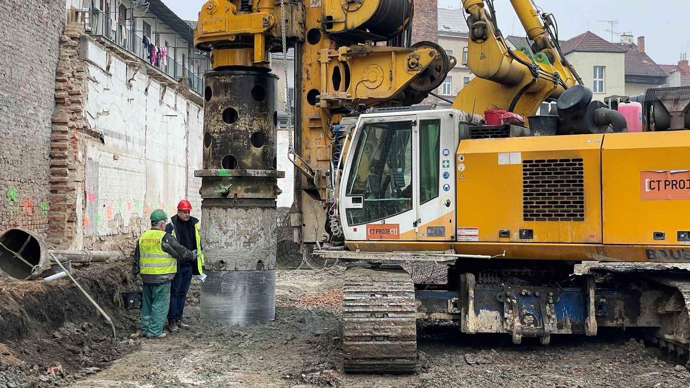
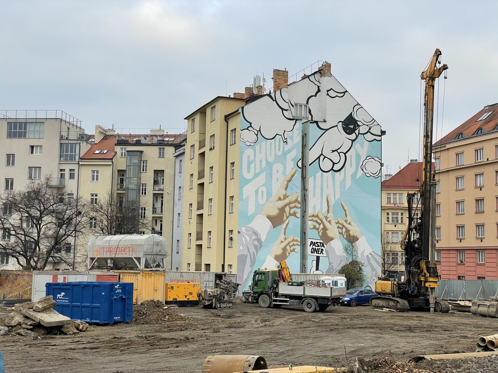
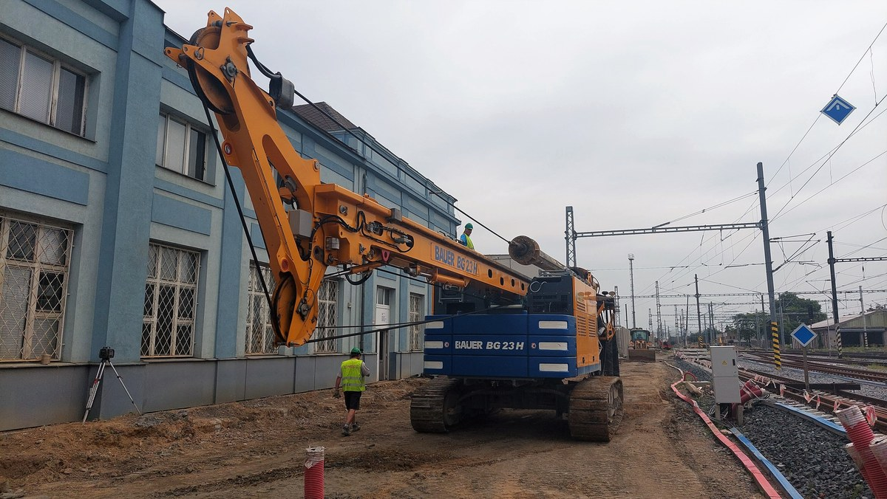
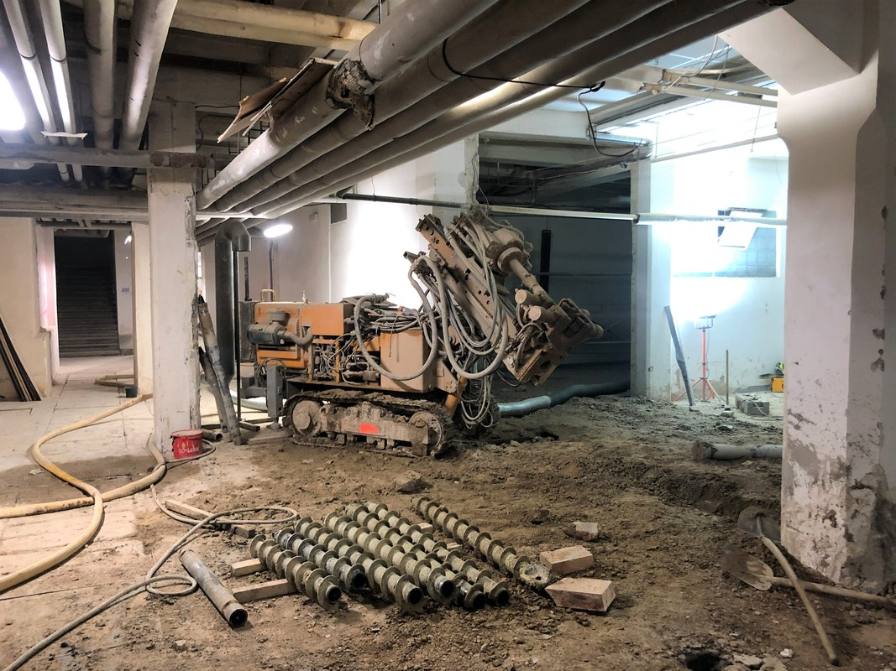
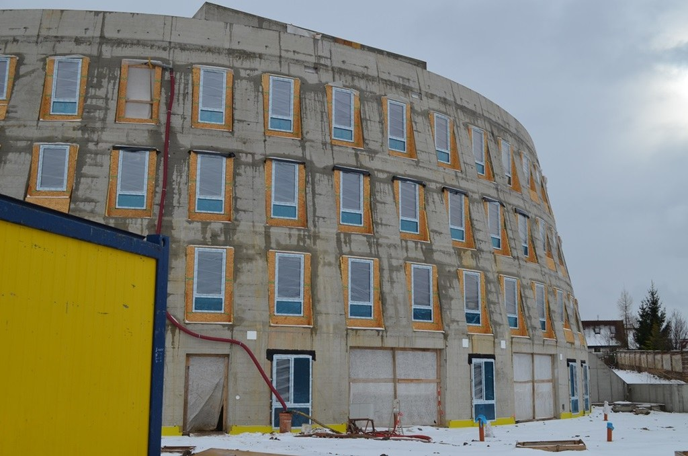
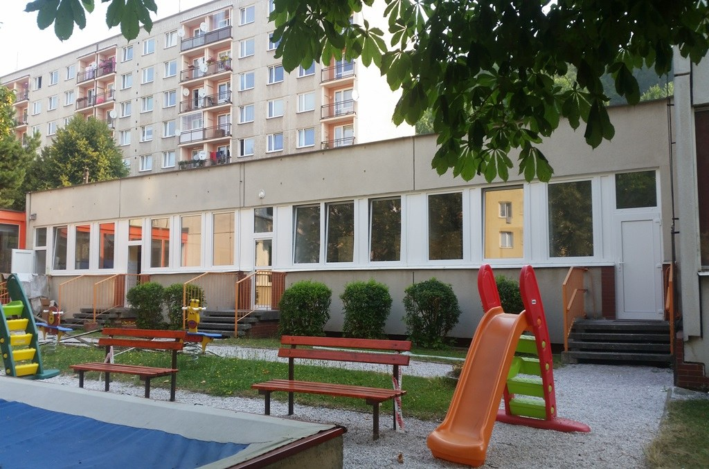

Generální dodávky staveb, opravy bytového fondu na klíč, certifikované zateplovací systémy ETICS i interiérové vestavby v Brně a Jihomoravském kraji. Osobní garance jednatele, certifikované materiály a transparentní řízení bez subdodavatelského chaosu.

„Nejvyšší kvalita námi nabízených prací ve stanoveném termínu a individuální přístup k přáním zákazníka.“

DENOSTAV s.r.o. je stavební společností, která od svého vzniku v roce 2014 staví na pevných základech řemeslné poctivosti, transparentního jednání a dodržování dohodnutých termínů.
Hlavní prioritou společnosti DENOSTAV s.r.o. je dosažení nejvyšší kvality námi nabízených prací a služeb ve stanoveném termínu, zajištění individuálního a kvalifikovaného přístupu k našim zákazníkům a jejich přáním.
Těšíme se na spolupráci! V případě, že zvažujete kompletní nebo i částečnou rekonstrukci bytu, domu nebo firemních prostor (administrativních nebo i výrobních) či máte zájem o jiné stavební práce a úpravy, jsme vám plně k dispozici.
Položkový rozpočet bez skrytých položek a závazný harmonogram výstavby chránící investora.
Pravidelná osobní přítomnost jednatele na kontrolních dnech a přímá kontrola technologických předpisů.
Od specializovaných rekonstrukcí interiérů k ucelenému generálnímu dodavatelství pozemních a inženýrských staveb v Jihomoravském kraji.
Založení firmy Ing. Pavlem Odstrčilem se zaměřením na rekonstrukce bytových jednotek, koupelen, kancelářských prostor a zednické práce s důrazem na kvalitu a čistotu provádění.
Rozšíření kapacit o šetrné bourací práce menšího i většího rozsahu s certifikovaným odvozem suti a zahájení generálních oprav bytových domů včetně rozvodů elektro-MaR, ZTI a ÚT.
Zavedení moderních fasádních zateplovacích technologií ETICS v souladu s normou ČSN 73 0540-2 a certifikace montáží sádrokartonových podhledů a protipožárních příček dle ČSN EN 520.
DENOSTAV s.r.o. je zavedeným a prověřeným partnerem pro bytová družstva, SVJ, komerční investory i soukromé stavebníky s přímými vazbami na přední výrobce stavebních materiálů v ČR i Evropě.
Prozkoumejte naše stavební postupy, normové parametry i konkrétní reference. Kliknutím na kartu otevřete detailní technickou specifikaci.
Kompletní rekonstrukce bytového fondu domů, bytových jednotek i firemních prostor včetně profesí elektro-MaR, ZTI a ÚT formou na klíč.

DemoliceVeškeré bourací práce menšího i většího rozsahu včetně šetrného roztřídění a ekologického odstranění suti od konzultace po realizaci.

NovostavbyKomplexní generální dodávky v oblasti průmyslové, inženýrské, bytové i občanské výstavby s garancí špičkové kvality a termínů.

Fasády ETICSVnější kontaktní zateplovací systémy rodinných i bytových domů s certifikací ETICS dle ČSN 73 0540 pro maximální energetickou úsporu.

InteriéryMontáž certifikovaných SDK podhledů, akustických příček, předsazených stěn a podkrovních vestaveb pro rychlou a čistou dispozici.
Kompletní logistika a dodávky prvotřídních stavebních materiálů jedniček na českém i zahraničním trhu včetně odborné montáže.
| Parametr / Norma | Technická specifikace DENOSTAV s.r.o. |
|---|---|
| Rozsah dodávky | Kompletní stavební dílo na klíč |
Ukázky naší práce v oblasti oprav bytového fondu, novostaveb, sádrokartonů a zateplování fasád.
Generální dodávka stavebních a montážních prací, monolitické konstrukce a čisté dokončovací práce.
Kompletní kontaktní zateplovací systém s minerální vatou, nová silikonová omítka a klempířské prvky.
Komplexní rekonstrukce rozvodů elektroinstalace, ZTI a vytápění včetně obkladů a sádrokartonů.
Šetrné bourací práce, nové dispozice příček, akustické SDK podhledy a velkoformátové dlažby.
Vycházíme z původního hodnotového manifestu společnosti s důrazem na nejvyšší technologickou úroveň.
Realizujeme kompletní rekonstrukce bytového fondu domů, včetně potřebných profesí elektro-MaR, ZTI, ÚT formou „na klíč“. Koordinujeme veškerá řemesla bez starostí pro investora.
Provádíme veškeré bourací práce menšího i většího rozsahu včetně odstranění a odvozu suti. Zákazníkovi tak nabízíme kompletní služby: od konzultací, přes provádění projektu až k vlastní realizaci díla.
Komplexní dodávky v oblasti průmyslové, inženýrské, bytové a občanské výstavby. Dodržujeme přísné normové standardy ČSN a technologické lhůty zrání stavebních směsí.
Zajistíme kompletní dodávku stavebního materiálu, montáží, úklidu sutě a celého staveniště. Naši dodavatelé jsou jedničkou na českém i zahraničním trhu s doloženou certifikací jakosti.
V případě, že zvažujete kompletní nebo i částečnou rekonstrukci bytu, domu nebo firemních prostor (administrativních nebo i výrobních) či máte zájem o jiné stavební práce a úpravy, a máte zájem o bližší informace nebo setkání, kontaktujte nás.
Stavební společnost Brno – generální dodávky, rekonstrukce a zateplení
Zanechte nám zprávu o vašem záměru. Ozveme se vám do 24 hodin s návrhem řešení.